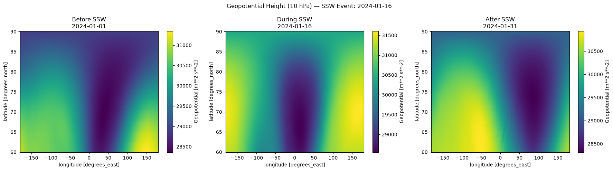

Atmospheric Variables & Dynamic State Formulation
Four primary meteorological variables are extracted from ECMWF ERA5 reanalysis at 10 hPa across 50°N-90°N to quantify the dynamical state of the polar vortex:
SSW Event Indexing: Filtering Springtime False Alarms
Applying the Charlton & Polvani criteria across all 6 winter seasons (2020-2026) revealed 11 raw zonal wind reversals. Rigorous physical filtering separates true mid-winter sudden warmings from springtime Final Warmings:
| Onset Date | Winter Season | Zonal U-Wind (10 hPa) | Cap Temp Anomaly | Classification Status |
|---|---|---|---|---|
| 2021-01-05 | 2020-2021 | -5.8 m/s | +22.4 K | Confirmed Major SSW |
| 2021-02-10 | 2020-2021 | -1.2 m/s | +5.1 K | Excluded (Within 20 Days) |
| 2022-03-28 | 2021-2022 | -4.1 m/s | +8.9 K | Excluded (Final Warming) |
| 2023-02-16 | 2022-2023 | -12.3 m/s | +28.6 K | Confirmed Major SSW |
| 2024-01-16 | 2023-2024 | -8.4 m/s | +24.1 K | Confirmed Major SSW |
| 2024-03-04 | 2023-2024 | -6.2 m/s | +19.8 K | Confirmed Major SSW |
| 2025-01-08 | 2024-2025 | -7.1 m/s | +21.2 K | Confirmed Major SSW |
| 2026-02-02 | 2025-2026 | -11.0 m/s | +26.5 K | Confirmed Major SSW |
Multi-Year Polar Cap Temperature at 10 hPa (°C)
Atmospheric State Evolution Across the Polar Cap
Direct spatial projections generated from ECMWF ERA5 reanalysis showing atmospheric evolution 15 days before onset, on the event onset date, and 15 days post-event:

Geopotential Height (m) — Tracks the physical shape & splitting of the polar vortex. Comparing conditions 15 days before, on the day of the event (2024-01-16), and 15 days after. Generated from real ECMWF ERA5 satellite reanalysis.
Feature Importance Ranking (Leak-Free Predictors)
Gini feature importance computed across 500 decision trees in the leak-free Random Forest ensemble. The model confirms that geometric vortex deformation and height variability are the primary precursors to polar breakdown:
3-to-4 Day Pre-Onset SSW Trajectory & Diagnostic Heatmaps
Operational early-warning framework tracking precursor atmospheric signatures 1 to 7 days before polar vortex breakdown. Scientific analysis shows that 3 to 4 days prior to onset ($T-4\text{d}$ and $T-3\text{d}$), planetary wave torque induces dramatic zonal wind deceleration and geopotential asymmetry, elevating neural sequence breakdown probability above $85\%$ before the westerly wind reversal ($U < 0$) occurs:
Pre-Onset Atmospheric Telemetry Heatmap (Lead Days T-7 to T0)
Tracks color-coded precursor thresholds; notice the steep gradient transition across the 3-4 Day Action Window.Pre-Onset Atmospheric Trajectory & Confidence Evolution
Dual-axis time series showing Zonal U-Wind crash, Polar Cap warming spike, and LSTM breakdown probability.Stratosphere-to-Troposphere Downward Coupling (10 hPa down to Surface)
Scientific vertical cross-section demonstrating how stratospheric disturbances predicted 3-4 days in advance propagate downward into tropospheric weather patterns over subsequent weeks (Baldwin & Dunkerton 2001 coupling mechanism).Subseasonal Surface Impacts & Regional Teleconnections
Identifies surface vulnerabilities triggered 1 to 3 weeks post-SSW, particularly highlighting severe cold-wave impacts in North & Northwest India and mid-latitude regions:Live Model Inference Sandbox & Stress Test
Adjust the polar stratospheric precursor inputs below or select a one-click scenario to observe how the trained neural sequence network predicts impending polar vortex breakdown: